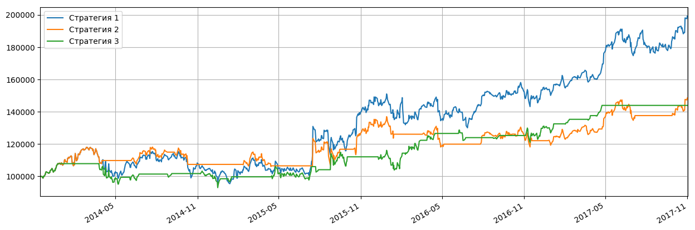

Котировки акций: Показать все
| Дата | Открытие | Минимум | Максимум | Закрытие | Объем |
|---|---|---|---|---|---|
| 2017-10-31 | 1 015.219971 ▲ | 1 012.135010 ▲ | 1 016.000000 ▼ | 1 013.650024 ▼ | 107 717.0 ▼ |
| 2017-10-30 | 1 014.000000 ▲ | 1 007.500000 ▼ | 1 024.969971 ▼ | 1 017.109985 ▼ | 2 081 000.0 ▼ |
| 2017-10-27 | 1 009.190002 ▲ | 1 008.200012 ▲ | 1 048.390015 ▲ | 1 019.270020 ▲ | 5 167 700.0 ▲ |
| 2017-10-26 | 980.000000 ▲ | 972.200012 ▲ | 987.599976 ▲ | 972.559998 ▼ | 2 042 100.0 ▲ |
| 2017-10-25 | 968.369995 ▼ | 960.520020 ▼ | 976.090027 ▲ | 973.330017 ▲ | 1 211 300.0 ▼ |
Японские свечи, объемы продаж, касательные 20-50:
Основные фин.показатели:
| Доходы (квартал), в млн.USD | 3 мес. 2017-09-30 | 3 мес. 2017-06-30 | 3 мес. 2017-03-31 | 3 мес. 2016-12-31 | 3 мес. 2016-09-30 |
|---|---|---|---|---|---|
| Общий доход | 27,772.00 | 26,010.00 | 24,750.00 | 26,064.00 | 22,451.00 |
| Общие эксплуатационные расходы | 19,990.00 | 21,878.00 | 18,182.00 | 19,425.00 | 16,684.00 |
| Операционный доход | 7,782.00 | 4,132.00 | 6,568.00 | 6,639.00 | 5,767.00 |
| Чистая прибыль | 6,732.00 | 3,524.00 | 5,426.00 | 5,333.00 | 5,061.00 |
| Пониженная прибыли на акцию (EPS) без ЧС | 8.97 | 5.01 | 7.75 | 7.62 | 7.25 |
| Баланс (квартал), в млн.USD | На 2017-09-30 | На 2017-06-30 | На 2017-03-31 | На 2016-12-31 | На 2016-09-30 |
| Всего текущих активов | 119,345.00 | 112,386.00 | 108,794.00 | 105,408.00 | 98,546.00 |
| Недвижимость/Имущество/Оборудование Всего | 56,358.00 | 53,341.00 | 50,321.00 | 47,527.00 | 46,094.00 |
| Всего активов | 189,536.00 | 178,621.00 | 172,756.00 | 167,497.00 | 159,948.00 |
| Общий долгосрочный долг | 3,964.00 | 3,955.00 | 3,937.00 | 3,935.00 | 3,938.00 |
| Всего обязательств | 32,436.00 | 30,335.00 | 27,807.00 | 28,461.00 | 25,845.00 |
| Общий капитал | 157,100.00 | 148,286.00 | 144,949.00 | 139,036.00 | 134,103.00 |
| Cash-flow (квартал), в млн.USD | 9 мес. 2017-09-30 | 6 мес. 2017-06-30 | 3 мес. 2017-03-31 | 12 мес. 2016-12-31 | |
| Поступления от операционной деятельности | 26,823.00 | 16,951.00 | 9,548.00 | 36,036.00 | |
| Поступления от инвестиционной деятельности | -24,427.00 | -10,023.00 | -2,851.00 | -31,165.00 | |
| Поступления от финансовой деятельности | -5,120.00 | -4,414.00 | -1,674.00 | -8,332.00 | |
| Чистый остаток денежных средств | -2,337.00 | 2,793.00 | 5,214.00 | -3,631.00 |
Полосы Боллинджера:

Последние финансовые новости: Показать все
| Дата | Заголовок | Источник |
|---|---|---|
| 2017-10-31 12:06 | CDH Китая, SenseTime, собравший около $ 450 млн фонда AI | nasdaq |
| Жюли Чжу HONG KONG, 31 октября (Рейтер) - Китайская CDH Investments и основанная на Гонконге SenseTime Group собирают около 3 млрд. Юаней (453 млн. Долл. США) для инвестиций в фирмы, работающие над технологией искусственного интеллекта (AI), два источника, которые знают говорится в сообщении агентства Reuters. План компаний для фонда, который, согласно источникам, будет в основном использоваться для инвестиций в стартапы Инициативы роста в мире, приходит на фоне стремления Пекина стать лидером в технологии, которая все больше становится ключом к различным секторам. Один из источников сказал, что основанная в Пекине инвестиционная фирма CDH и SenseTime, которая предоставляет технологические приложения, такие как распознавание лиц, видеоанализ и автономное вождение, будут выступать в качестве со-менеджеров фонда, известных как общие партнеры. Не сразу стало ясно, когда сбор средств будет завершен или кто будет потенциальными инвесторами. Источники отказались от названий, поскольку планы привлечения капитала не были публичными. CDH и SenseTime отказались от комментариев. В июле SenseTime собрал 410 миллионов долларов, во главе с CDH и государственным фондом Китая Sailing Capital, в сделке, которая стала одним из крупнейших раундов сбора средств фирмой AI и оценила ее более чем в 1,5 миллиарда долларов. В октябре прошлого года государственный аналитический центр Китайской академии наук и инвестиционной компании Hillhouse Capital Group запустил один из первых в стране фондов, ориентированных на ИИ, с первоначальным целевым показателем сбора средств в размере 1 млрд. Юаней (150 млн. Долларов США). Китайский гигант поисковой системы Baidu Inc, который делает большой толчок к ИИ, открыл первую национальную лабораторию ИИ в марте в партнерстве с мощным государственным планировщиком - Национальной комиссией по развитию и реформам. БОЛЬШОЙ КИНО КИНА Неизбежная деятельность по сбору средств, связанная с технологией, появилась после того, как в Пекине в июле был представлен план развития ИИ, чтобы увеличить стоимость основных отраслей промышленности страны до более 150 млрд. Юаней к 2020 году и 400 млрд. Юаней к 2025 году. Благодаря этому мощному толку в ИИ Китай стремится конкурировать с лидерами рынка США, такими как Alphabet Inc'Google и Microsoft. Пекинский план ИИ основан на том, что Соединенные Штаты готовы усилить контроль за инвестициями, в том числе искусственным интеллектом, из-за опасений, что страны, включая Китай, могут получить доступ к технологиям стратегического военного значения. Государственный совет Китая в июле заявил, что «ситуация с Китаем в области национальной безопасности и международной конкуренции сложна», что стало частью стимула для создания внутреннего толчка AI. SenseTime, трехлетняя фирма AI, считает, что ее основными клиентами являются Китайская государственная безопасность и отечественные тяжеловесы, в том числе China Mobile, HNA Group и Huawei Technologies. CDH, поддерживаемый фондом суверенного богатства Сингапура GIC и Международной финансовой корпорацией, имеет около 18 миллиардов долларов активов под управлением, а в портфельных фирмах входит крупнейший в мире поставщик свинины WH Group. (1 доллар США = 6,6255 китайских юаней) | ||
| 2017-10-31 07:58 | Alphabet Inc. (GOOGL) обновлен до версии Vetr Inc. | dispatchtribunal |
| Alphabet Inc. (NASDAQ: GOOGL) была повышена инвестиционными аналитиками Vetr от рейтинга «продавать» до «удерживаемого» рейтинга в отчете об исследовании, выпущенном клиентам и инвесторам во вторник. В настоящее время брокерская компания имеет целевую цену в размере 1 004,07 долл. США на акции поставщика информационных услуг. Целевая цена Vetr предложила бы потенциальный минус 2,81% от текущей цены компании. Несколько других аналитиков по акциям также недавно опубликовали отчеты о GOOGL. Б. Райли пересчитал рейтинг «купить» и опубликовал оценочную цену в размере 1,050 долларов США на акции «Алфавит» в исследовательской записке в воскресенье, 30 июля. SunTrust Banks, Inc. подтвердила рейтинг «buy» и выпустила целевую цену в размере 1 180,00 долларов США (по сравнению с 1100,00 долларов США) по акциям «Алфавит» в отчете в пятницу. KeyCorp подтвердил рейтинг «buy» и опубликовал целевую цену в 1 150,00 долларов США по акциям «Алфавит» в отчете в пятницу. BMO Capital Markets подтвердило рейтинг «рыночный результат» и выпустил целевую цену в $ 970,00 на акции «Алфавит» в отчете в пятницу. Наконец, Royal Bank Of Canada повысил свою целевую цену по акциям Alphabet с $ 1,050.00 до $ 1,125.00 и дал компании рейтинг «outperform» в отчете в пятницу. Один аналитик оценил акции с рейтингом продажи, восемь дали рейтинг холдинга, тридцать девять - присвоили рейтинг покупки, а один дал сильный рейтинг покупки акциям компании. В настоящее время алфавит имеет средний рейтинг «Покупать» и среднюю целевую цену в размере 1 087,02 доллара США. Алфавит (NASDAQ: GOOGL) открылся во вторник в 1033.13. Акции имеют рыночную капитализацию в размере 715,83 млрд. Долл. США, соотношение цены и прибыли 37,44 и бета-версию 0,96. Компания имеет 50-дневную скользящую среднюю цену в размере 976,09 долл. США и 200-дневную скользящую среднюю цену в размере 956,78 долл. США. Алфавит имеет 52-недельный минимум в 743,59 доллара США и 52-недельный максимум в 1,063,62 доллара. Алфавит (NASDAQ: GOOGL) в последний раз опубликовал свои квартальные данные о доходах в четверг, 26 октября. Поставщик информационных услуг сообщил о прибыли в размере 9,57 долл. За акцию (EPS) за квартал, опередив консенсус-оценку в размере 8,43 долл. США на 1,14 долл. США. Алфавит имел чистую маржу в размере 20,09%, а рентабельность собственного капитала - 14,26%. Доход компании составил 22,27 млрд долл. В течение квартала по сравнению с консенсус-прогнозом в размере 21,94 млрд долл. США. В течение того же квартала в предыдущем году фирма разместила прибыль в размере 9,06 долл. За акцию. Аналитики рынка акций ожидают, что Alphabet опубликует EPS на 31,99 доллара за текущий год. УВЕДОМЛЕНИЕ о НАРУШЕНИИ ТОРГОВЫХ МАРШРУТОВ: «Alphabet Inc. (GOOGL), модернизированный для проведения Vetr Inc.», изначально сообщалось Трибуналом по отгрузке и принадлежало Трибуналу по рассылке. Если вы просматриваете эту статью в другой публикации, она незаконно украдена и переиздана с нарушением законодательства США и международного законодательства об авторских правах и товарных знаках. Верную версию этой части можно просмотреть на странице https://www.dispatchtribunal.com/2017/10/31/alphabet-inc-googl-upgraded-to-hold-by-vetr-inc.html. Ряд крупных инвесторов недавно купили и продали акции GOOGL. Компания Novare Capital Management повысила свою долю в акциях «Алфавит» на 0,9% во втором квартале. В настоящее время ООО «Новаре Капитал Менеджмент» владеет 8 590 акциями акций поставщика информационных услуг на сумму 7 986 000 долл. США после приобретения еще 80 акций в течение периода. Компания Camelot Portfolios LLC приобрела новую позицию в акциях «Алфавит» во втором квартале на сумму 211 000 долларов США. Страна Trust Bank приобрела новую позицию в акциях «Алфавит» во втором квартале на сумму 44 071 000 долларов США. Girard Partners LTD. поднял свою долю в акциях Алфавита на 10,7% в 1-м квартале. Girard Partners LTD. теперь владеет 4528 акциями акций поставщика информационных услуг на сумму 3 839 000 долларов США после приобретения дополнительных 439 акций в течение периода. Наконец, Anchor Capital Advisors LLC повысила свою долю в акциях Alphabet на 3,0% во втором квартале. Компания Anchor Capital Advisors LLC теперь владеет 378 акциями акций поставщика информационных услуг на сумму 351 000 долларов США после приобретения дополнительных 11 акций в течение периода. 33,87% акций в настоящее время принадлежит институциональным инвесторам. Профиль компании Alphabet Alphabet Inc является холдинговой компанией. Компании компании включают Google Inc (Google) и ее интернет-продукты, такие как Access, Calico, CapitalG, GV, Nest, Verily, Waymo и X. В сегменты компании входят Google и другие ставки. В сегменте Google представлены его интернет-продукты, такие как поиск, реклама, торговля, карты, YouTube, Google Cloud, Android, Chrome и Google Play, а также его аппаратные инициативы. Количество просмотров: ArticleHistoryID = 12378727 & постдатировать = 2017-10-31 & тип = а & ID = 917167 Получайте новости и рейтинги Alphabet Inc. Daily. Введите свой адрес электронной почты ниже, чтобы получить краткий обзор последних новостей и рейтингов аналитиков для Alphabet Inc. и связанных с ними компаний с бесплатным ежедневным электронным бюллетенем MarketBeat.com. | ||
| 2017-10-31 07:09 | Facebook Inc. (FB) - Лучше в зеркале заднего вида ?. FB имеет большие надежды на недавний квартал, но будущий рост сомнительный | investorplace |
| Facebook Inc. () сообщает о доходах 1 ноября, и инвесторы ожидают больших результатов. Консенсус заключается в том, что он будет зарабатывать 1,28 долл. На акцию при доходах в размере 9,88 млрд. Долл. США. Это будет означать рост 41% в верхней строке и 49% в нижней строке, по сравнению с тем же кварталом год назад. Но аналитики шепчут, что прибыль может составить $ 1,40 за акцию, поэтому ожидайте, что акции начнут расти. Facebook уже является одним из самых ценных акций на рынке, увеличившись на 54% до 2017 года, что более чем удваивает доходность по среднему значению NASDAQ. Он также продолжал расти, так как его цена за прибыль несколько упала, что означает, что это оправдало доверие спекулянтов. Но инвесторы не покупают то, что вы сделали. Они покупают то, что вы собираетесь делать. Улучшает ли Facebook внешний вид зеркала заднего вида? Важно отметить, что компания не просто служба Facebook больше. Facebook - это Instagram. Это Посланник. Это Whatsapp. Это облачная сеть и рекламная сеть. Его запасы выросли по сравнению с Alphabet Inc. (), которые выросли на 700% за последние пять лет против 200% акций Google. Выгода FB даже удвоила прибыль Amazon.com Inc. () за этот период, а основатель Марк Цукерберг - единственный миллиардер в списке Forbes 400, чье состояние смогло не отставать от основателя Amazon Джеффа Безоса, самый богатый человек, в 2017 году. | ||
| 2017-10-30 19:45 | Alphabet Inc. (NASDAQ: GOOG) получает рейтинг «Купить» от Goldman Sachs Group, Inc. (The) | dispatchtribunal |
| Goldman Sachs Group, Inc. (The) обновила рейтинг своей покупки по акциям Alphabet Inc. (NASDAQ: GOOG) в исследовании, опубликованном инвесторами в пятницу, 20 октября. GOOG был темой нескольких других отчетов. Партнеры MKM переиздали рейтинг покупки и установили целевую цену в размере 1 170,00 долл. США по акциям Алфавита в отчете об исследовании в среду, 28 июня. Cowen и Company перевыполнили рейтинг победителя и установили целевую цену в размере 1,075,00 долл. США по акциям Алфавита в отчете об исследовании в четверг, 10 августа. Компания Needham & Company LLC переиздала рейтинг покупки и установила целевую цену в размере 1,050,00 долларов США по акциям Alphabet в исследовании, опубликованном в понедельник, 17 июля. Роберт У. Бэрд переиздал рейтинг акций по алфавиту в отчете об исследовании в понедельник, 3 июля. Наконец, J P Morgan Chase & Co переиздал рейтинг покупки акций Alabet в отчете исследования во вторник, 25 июля. Один аналитик оценил акции с рейтингом продажи, семь из них присвоили рейтинг холдинга, а тридцать девять - рейтинг покупки акций компании. В настоящее время акции имеют консенсус-рейтинг Buy и среднюю цену в размере 1 042,22 доллара США. Алфавит (NASDAQ GOOG) торгуется на 0,21% во время торгов в пятницу, достигнув $ 1017,11. Объем торгов компании составил 2085 040 акций. Компания имеет рыночную капитализацию в размере 704,73 миллиарда долларов, соотношение P / E - 36,86 и бета 0,94. Алфавит имеет 12-месячный минимум в 727,54 доллара и 12-месячный максимум в 1 048,39 доллара. 50-дневная скользящая средняя цена фирмы составляет 957,73 долл., А ее 200-дневная скользящая средняя составляет 935,53 долл. США. Алфавит (NASDAQ: GOOG) в последний раз объявил о своих квартальных данных о доходах в четверг, 26 октября. Поставщик информационных услуг сообщил о прибыли в размере 9,57 долл. За акцию (EPS) за квартал, превысив консенсусную оценку Thomson Reuters в размере 8,31 долл. США на 1,26 долл. США. Азбука имела доходность в размере 14,26% и чистую маржу в размере 20,09%. Доходы компании составили 27,77 млрд. Долл. США в течение квартала, по сравнению с оценками аналитиков в размере 27,17 млрд. Долл. США. За тот же период прошлого года компания заработала $ 9,06 за акцию. Квартальный доход Alphabet вырос на 23,7% по сравнению с тем же кварталом прошлого года. В среднем аналитики по акциям ожидают, что Alphabet опубликует прибыль на акцию за акцию на 31,85 долл. США за текущий год. В других новостях из «Азбуки» директор L John Doerr продал 13 556 акций «Алфавит» в сделке со вторника, 15 августа. Акции были проданы по средней цене 922,15 доллара США на общую сумму 12 500 665,40 долларов США. После продажи директор теперь владеет 3485 акциями компании, стоимостью 3 219 692,75 долларов США. Продажа была раскрыта в юридической форме в SEC, которая доступна через эту гиперссылку. Кроме того, генеральный директор Sundar Pichai продал 4000 акций акций Alphabet в сделке со среды, 2 августа. Акции были проданы по средней цене 930,46 долларов США, общая сумма сделки составила 3 721 840,00 долларов США. После завершения продажи главный исполнительный директор теперь непосредственно владеет 1764 акциями компании стоимостью около 1 641 331,44 долл. США. Раскрытие этой продажи можно найти здесь. Инсайдеры продали 40,169 акций компании на сумму $ 37,644,407 за последний квартал. Корпоративным инсайдерам принадлежит 13,92% акций компании. Несколько хедж-фондов и других институциональных инвесторов недавно купили и продали акции GOOG. Janus Henderson Group PLC повысила свою позицию в акциях Алфавита на 759,0% во втором квартале. Janus Henderson Group PLC теперь владеет 3,204,087 акциями акций поставщика информационных услуг на сумму 2 911 734 000 долларов США после покупки дополнительных 2831 099 акций за этот период. Компания Capital Capital Advisors LLC повысила свою позицию в акциях «Алфавит» на 87 001,5% во втором квартале. Теперь Harvest Capital Advisors LLC владеет 1 993 754 акциями акций поставщика информационных услуг на сумму 2 194 000 долларов США после покупки дополнительных 1 991 465 акций в течение периода. Koch Industries Inc. подняла свою позицию в акциях Алфавита на 214 636,6% во втором квартале. Koch Industries Inc. теперь владеет 1,161,725 акциями акций поставщика информационных услуг на сумму 1 160 000 долларов США после покупки дополнительных 1,161,184 акций за этот период. BlackRock Inc. подняла свою позицию в акциях Alphabet на 4,8% во втором квартале. BlackRock Inc. теперь владеет 18 058 006 акциями акций поставщика информационных услуг на сумму 16 409 850 000 долларов США после покупки дополнительных 826 480 акций за этот период. Наконец, Capital World Investors подняли свою позицию в акциях «Алфавит» на 13,9% во втором квартале. В настоящее время Capital World Investors владеет 6 371 356 акциями акций поставщика информационных услуг на сумму $ 5,789,842,000 после покупки дополнительных 776 853 акций в течение периода. 34,50% акций в настоящее время принадлежит институциональным инвесторам. О алфавите Alphabet Inc является холдинговой компанией. Компании компании включают Google Inc (Google) и ее интернет-продукты, такие как Access, Calico, CapitalG, GV, Nest, Verily, Waymo и X. В сегменты компании входят Google и другие ставки. В сегменте Google представлены его интернет-продукты, такие как поиск, реклама, торговля, карты, YouTube, Google Cloud, Android, Chrome и Google Play, а также его аппаратные инициативы. Количество просмотров: тип = а & ID = 910941 Получайте новости и рейтинги Alphabet Inc. Daily. Введите свой адрес электронной почты ниже, чтобы получить краткий обзор последних новостей и рейтингов аналитиков для Alphabet Inc. и связанных с ними компаний с бесплатным ежедневным электронным бюллетенем MarketBeat.com. | ||
| 2017-10-30 13:57 | Go Long Apple Inc. заработает бесплатно | finance.yahoo |
| На прошлой неделе завершился взрывами акций мегапикселей, таких как Apple Inc. (NASDAQ: AAPL). Быки на Уолл-стрит ликовали от прибыли в четверг, которую поставили Alphabet Inc (NASDAQ: GOOG, NASDAQ: GOOGL) и Amazon.com, Inc. (NASDAQ: AMZN). Эти двое поставили поразительную статистику, которая обещала гораздо больше потенциальных возможностей. Источник: Shutterstock Сочувствие, акции AAPL собрались почти на 4% в ожидании своих доходов, которые должны выйти на этой неделе. Хотя реакции на прошлой неделе вдохновляли, на этой неделе они не гарантируют аналогичные результаты. Я считаю, что краткосрочная реакция на событие заработка - это полная смена монет. Независимо от качества квартала, мы не знаем, что скажет руководство, и не знаем, как будут реагировать трейдеры. Дело в том, что Baidu Inc (ADR) (NASDAQ: BIDU) сообщила о большом квартале, а акции упали на 7%, но General Electric Company (NYSE: GE) достала стерню, а акции перевернулись с -6% до + 2% в тот день , InvestorPlace - новости фондового рынка, советы по продажам и советы по торговле Долгосрочные фундаментальные факторы будут иметь преимущественную силу, но при торговле вариантами время - это роскошь, мимолетная. Сегодня я хочу делать ставку на долгосрочную жизнеспособность AAPL. Это сливки урожая, когда дело касается корпораций. Он продает каждый виджет, который он производит, и у него есть лояльная клиентура, которая не имеет права платить за воспринимаемое превосходство своих продуктов. Они самодовольно утверждают, что они застряли в экосистеме Apple. Я лично не понимаю, но это работает для AAPL. Несмотря на мой оптимизм в отношении акций здесь, я по-прежнему остро критикую Тима Кука. Я думаю, что он разрушит эту жемчужину компании, если он не изменит свой путь. Долгосрочная задолженность перед капиталом движется в неправильном направлении, и я не против, если деньги используются в росте, а не в финансовой инженерии. Я думаю, что акционерам будет лучше, если Кук инвестирует в новые предприятия. Мое личное мнение о том, что GOOGL и AMZN обе устанавливают свои будущие перспективы лучше, чем Тим Кук. У них обоих есть несколько новых предприятий, которые скоро станут крупными коровами. Сказав, моя торговля сегодня оптимистична. Моя говядина с Куком не означает, что я думаю, что проблема неминуема. К счастью для инвесторов AAPL, компания представляет собой гигантский валун и потребует много лет, чтобы остановить даже при движении в гору. Поэтому я знаю, что в запасе AAPL есть ощутимая ценность. Его баланс является солидным, а потоки доходов с iPhone составляют амазонские пропорции. Массивный поток наличности для поддержания его на своем пути. Нажмите, чтобы увеличить Это не то же самое, что ставки на потенциал роста. Я просто создаю доход в течение следующих нескольких месяцев, считая, что под акциями есть математическая поддержка. Кроме того, я знаю, что если он упадет, знаменитый инвестор Уоррен Буффет и программы выкупа компании будут защищать мои позиции. Если я не могу рисковать бычьими деньгами на акции Apple на этом uber-бычьем рынке, тогда я не должен инвестировать. Торговля: Продайте AAPL в июне 2018 года. Это бычья сделка, когда я собираю $ 2,50 для открытия. Здесь у меня есть 85% теоретических шансов на успех. Но если цена падает ниже моей забастовки, то я получаю убытки ниже $ 127.50. Продажа голых стад очень сложна, особенно на рынках, близких к рекордным максимумам. Те, кто хочет смягчить этот риск, могут продавать спреды. Альтернативная торговля: продать AAPL в июне 2018 года. Спрэд имеет одинаковые шансы, но принесет 15% -ный доход от риска. Ни одна сделка не требует ралли для получения прибыли. В конечном счете, независимо от того, насколько я осторожен, инвестиции в акции чреваты опасностью, поэтому я никогда не рискую больше, чем я готов проиграть Получите мой информационный бюллетень бесплатно здесь. Николас Чахин является управляющим директором SellSpreads.com. На момент написания этой статьи он не занимал должности ни в одном из вышеупомянутых ценных бумаг. Вы можете следовать за ним, как @racernic, на твиттере и сточных копях. Post Go Long Apple Inc. Into Earnings for Free впервые появился на InvestorPlace. | ||
Рекомендации аналитиков:

Стратегии:
Индекс RSI:

Индекс MACD:

Сигнальная шкала 1: